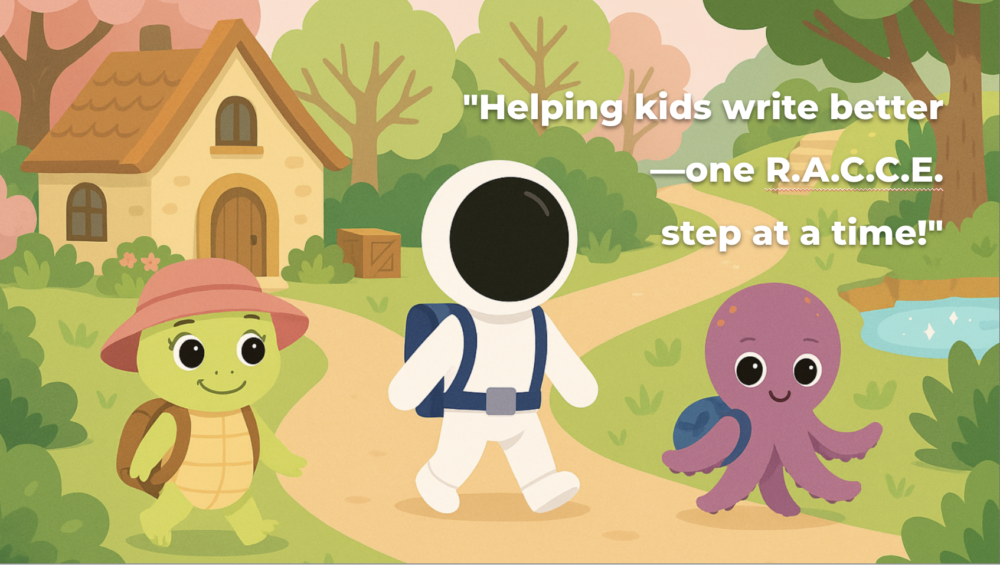
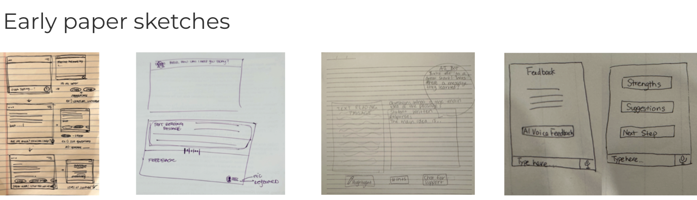
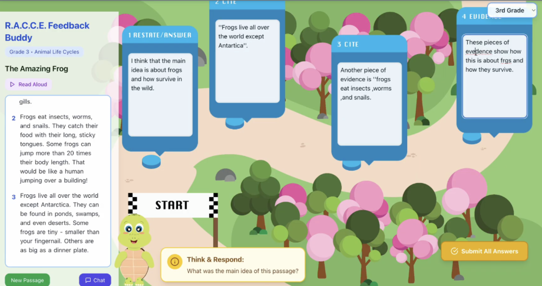

Educational Technology · AI-Assisted Learning
AI Feedback Buddy
AI Feedback Buddy is an AI-assisted educational web application that helps Grade 3–5 elementary students improve reading response writing through real-time guidance and gamified learning. The experience transforms the R.A.C.C.E. writing framework into an interactive journey, providing immediate, personalized feedback while supporting teachers with more efficient writing instruction.

Role
Front-end Developer
Team
4 Members
Platform
Figma • Replit • Adobe Illustrator
The Challenge
Reading response writing is a core literacy activity for Grade 3–5 elementary students, yet many struggle to organize their ideas and receive meaningful feedback while writing. Teachers often have limited time to provide individualized support, resulting in delayed or generalized feedback that can reduce student motivation and slow learning progress.
Our goal was to design an AI-assisted writing companion that guides students through the R.A.C.C.E. writing framework while providing immediate, encouraging feedback. By combining educational research with AI-assisted learning, we aimed to help students become more confident writers while reducing teachers' feedback workload.
Research & Discovery
Before designing AI Feedback Buddy, our team explored the educational challenges surrounding writing feedback for elementary students. We combined literature review, competitive analysis, classroom insights, and teacher research to better understand how AI could support writing instruction while complementing teachers' existing practices. These findings shaped the principles that guided the final product.
Literature Review
Reviewed research on formative feedback, scaffolding, metacognition, and cognitive load to identify principles for designing effective AI-assisted writing support for young learners.
Teacher Research
Conducted teacher surveys and collaborated with an experienced elementary educator to better understand classroom writing challenges.
Competitive Analysis
Evaluated existing AI writing tools to identify opportunities for an age-appropriate, engaging writing experience.
Design Evolution
Guided by our research findings, our team explored multiple interface concepts before arriving at the final experience. We began with paper sketches to rapidly explore interaction ideas, refined those concepts into functional wireframes, and gradually developed a playful visual language tailored to elementary students. Each iteration helped improve the writing workflow, AI feedback placement, and overall user experience.

Paper Sketches. We quickly explored different layouts for the writing workflow, AI feedback placement, and navigation before moving into higher-fidelity designs.
Prototype
We developed an interactive prototype that transformed the R.A.C.C.E. writing framework into a guided learning experience. The interface below showcases the Grade 3 Turtle Forest version, where students progress through each stage of the writing process while receiving AI-assisted guidance, immediate feedback, and encouraging prompts designed to build confidence and improve their writing skills.

The Grade 3 Turtle Forest prototype combines interactive reading passages, AI-assisted writing support, and the R.A.C.C.E. framework into a playful learning experience.
User Testing
To evaluate the prototype, we conducted moderated usability testing with a Grade 3 student using the Turtle Forest version of AI Feedback Buddy. Prior to testing, parent consent and student assent were obtained to ensure ethical participation. During the session, we observed how the student navigated the interface, interacted with the AI-assisted guidance, and completed each stage of the R.A.C.C.E. writing process. Following the activity, we conducted a semi-structured interview and recorded observational notes to better understand the student's experience and identify opportunities for future improvements.
The complete moderated usability testing session is available below for anyone interested in observing the participant's interactions and responses throughout the evaluation.
▶ View Full User Testing Session (13 min)Evaluation
To evaluate AI Feedback Buddy, our team designed a mixed-method evaluation plan that measured both learning outcomes and the overall user experience. Rather than focusing only on writing performance, we wanted to understand how students interacted with the experience, how they responded to AI-assisted feedback, and whether the tool supported confidence and engagement throughout the writing process.
Learning Outcomes
Compare students' writing quality before and after using the R.A.C.C.E. framework through rubric-based assessment.
User Experience
Conduct observational user testing, interviews, and self-reflections to better understand engagement, usability, and overall learning experience.
Behavior Analysis
Analyze clickstream data and revision behaviors to better understand students' writing process and interaction patterns.
My Contribution
I transformed our team's research and interface designs into a functional educational web application.
I implemented the interactive web application using Replit, built the core user interface, and translated our team's designs into a functional prototype. I collaborated closely with my teammates throughout the project, contributing to discussions on interaction design while ensuring the final experience aligned with our research findings and educational goals.
Reflection
This project introduced me to new ways of designing and building interactive learning experiences.
This was my first experience designing a gamified educational product. I also discovered how AI-assisted development tools, particularly Replit, could accelerate prototyping and make implementation more iterative and collaborative. Seeing how quickly ideas could be transformed into working features sparked my interest in vibe coding. The experience changed how I think about building digital products and reinforced my passion for creating engaging, human-centered learning experiences.